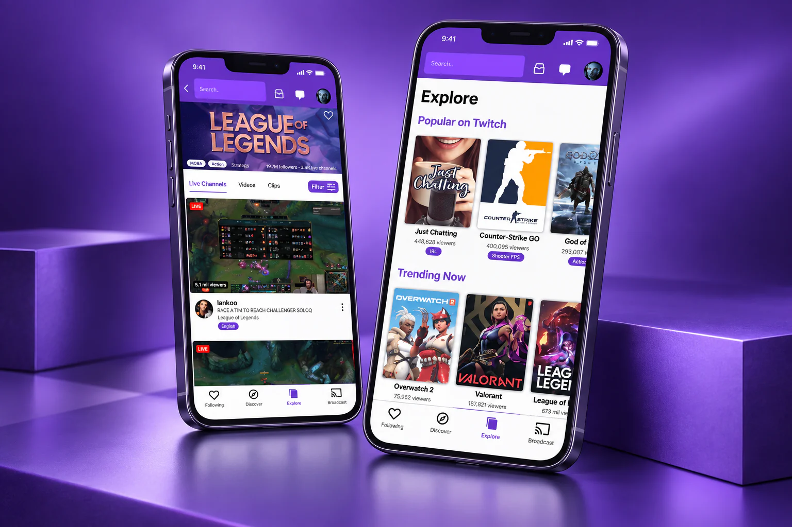

Broaden the visual references
A comparison with streaming platforms, including Netflix, informed a more visual Explore screen and a country-based top categories section.
Twitch
A short, self-initiated interface exercise exploring an app I use regularly. The focus was UI design and working within a two-day deadline.

The aim was to explore Twitch’s visual identity and navigation within a deliberately limited exercise, rather than conduct a full UX research project.
A comparison with streaming platforms, including Netflix, informed a more visual Explore screen and a country-based top categories section.
The proposal renamed “Create” to “Broadcast”, moved it into the bottom navigation and made room for search at the top.
Purple played a stronger role in navigation and controls. A smaller, animated profile panel aimed to leave more of the browsing context visible.
The exercise strengthened my Figma and interface design skills while exploring how much personality a familiar brand can bring to its product.